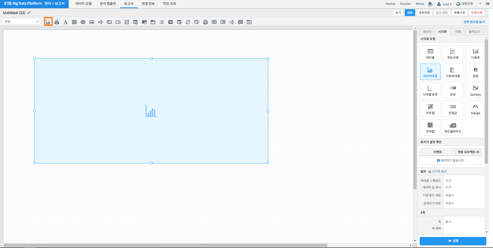
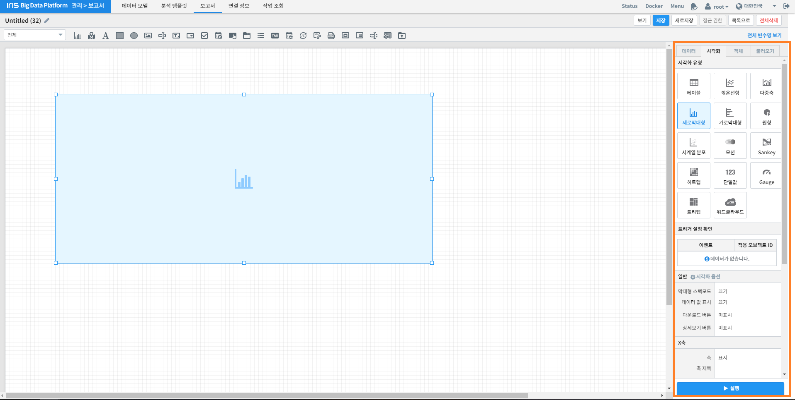
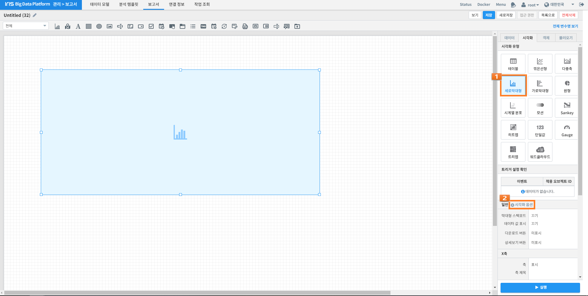
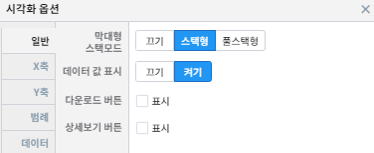
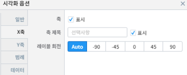
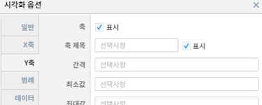
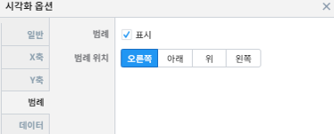
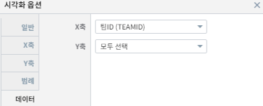

세로 막대형 차트 그리기¶
개요¶
본 문서는 세로 막대형 차트를 보고서에 추가하는 방법에 관하여 기술합니다. 데이터를 표현할 때 높이(또는 길이)로써 값을 표현하며, 이를 다른 값 또는 축과 비교할 수 있습니다. 중점을 두고 관찰하고자 하는 항목에 대해 다른 색상을 이용하여 사용자의 시선을 끌 수 있으며 직관적으로 정보를 전달 할 수 있습니다. 막대를 세로로 할 수도 있고 가로로 할 수도 있습니다. 가독성 면에선 항목이 적을수록 가로가 좋고 항목이 많을수록 세로가 좋습니다. 스택형은 데이터의 빈도를 그룹별로 누적 빈도를, 풀스택형은 전체를 기준으로 그룹별 상대적 비율(누적퍼센트)을 집계해 줍니다.

세로 막대형 차트 그리기¶
세로 막대형 차트를 그리는 방법은 다음과 같습니다.
아래 절차는 보고서 편집 화면에서 진행됩니다.
세로 막대형 차트 영역 생성¶
위 화면에 주황색 상자로 표시된 “차트” 아이콘을 클릭한 후, 마우스 드래그 앤 드롭으로 세로 막대형 차트가 그려질 영역을 생성합니다.
데이터 설정¶
이어서 화면 우측의 “데이터” 탭에서 세로막대형를 그릴 때 사용될 데이터를 설정합니다.
위 예시 화면은 Batting Table 데이터의 전체 기간 중 팀 ID 별로 출현 빈도의 총합을 구한 설정을 보여주고 있습니다.
데이터 Command: * | stats count(G) by TEAMID
시각화 옵션 설정¶
데이터 설정이 끝나면 우측 “시각화” 탭으로 이동합니다.
“시각화 유형”에서 “세로막대형”를 선택한 후 하단의 “일반” 옆의 “시각화 옵션”을 클릭하십시오.
| 옵션 | 설명 |
|---|---|
|  | 막대형 스택모드, 데이터 값 표시, 다운로드 버튼, 상세보기 버튼 설정 |
|  | 세로막대형 차트의 X축 표시 여부, 축 제목, 레이블 회전 관련 설정 |
|  | 세로막대형 차트의 Y축 표시 여부, 축 제목, 레이블 회전 관련 설정 |
|  | 세로막대형 차트의 범례 및 범례 위치 관련 설정 |
|  | 세로막대형 차트 X축 및 Y축에 해당하는 데이터 관련 설정 |
{kind=link}
{kind=link}
{kind=link}
{kind=link}
{kind=link}
그리고자 하는 세로막대형 차트에 맞게 위 옵션들을 수정합니다.
{kind=link}
주의사항¶
[Notice 01] [보기] 버튼을 눌렀을 때, 차트가 자동으로 실행되지 않을 경우
차트의 경우, "자동 실행"을 설정하지 않을 경우 보고서 조회 시 자동으로 실행되지 않습니다.
[데이터] 탭 하단의 [데이터 실행방법 설정]에 있는 "자동 실행"을 선택한 후 다시 확인해보시기 바랍니다.
(아래 그림 참조)

[Notice 02] "키 값"과 "가중치" 드롭다운 메뉴에 아무 컬럼도 표시되지 않을 경우, 아래 절차를 진행하시기 바랍니다.
1) 데이터 설정에 오류가 있는지 확인합니다.
2) 데이터 설정에 문제가 없다면, 우측 하단의 [실행] 버튼을 클릭한 후 다시 확인하시기 바랍니다.